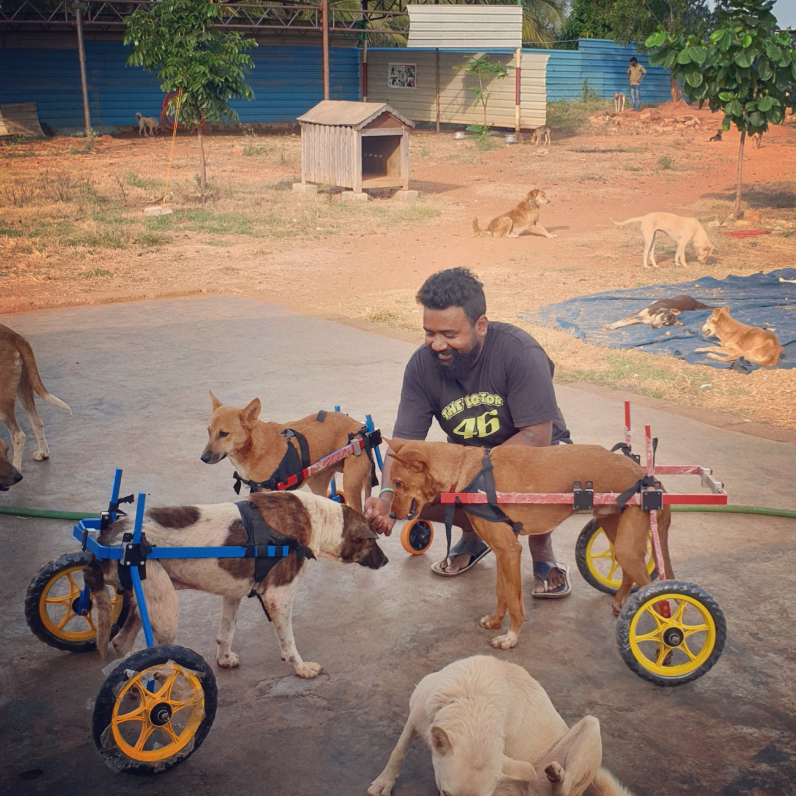

WE SAVE ANIMALS(WSA) WELFARE TRUST
A team of animal lovers spreading relief and support for human's best friend "DOGS".
As long as people think that animals don't feel, animals will have to feel that people don't think
| about the founder | |
|---|---|
| Praveen Kumar L, also called Rider Praveen is an ex-gym instructor who gave up his job, his means of livelihood, all his and his family’s assets and savings to start We Save Animals (WSA) Welfare Trust. From paralysed, blind, old aged animals to accident cases, cruelty cases and terminally ill animals he takes them all in, giving them happiness, food and a home in his shelter. It started for Praveen in 2013, when he rescued a kitten with a spinal injury. He nursed it at home, but it passed away after a week, leaving Praveen to wonder what he could do to help numerous animals like this, that suffer in silence. |
 |